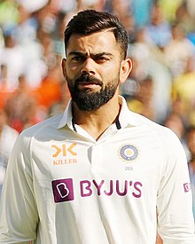

 Virat Kohli is an Indian international cricketer and the former captain of the Indian national cricket team. He currently represents Royal Challengers Bangalore in the IPL and Delhi in domestic cricket. Kohli is
widely regarded as one of the greatest batsmen in the history of the sport, and the best of this era. He is the highest run scorer in T20I and IPL. In 2020, the International Cricket Council named him the male cricketer of the decade. Kohli is
currently fourth-highest run-scorer in international cricket and stands second in the list of most international centuries scored. He also holds the record for scoring the most centuries in One Day International cricket.Kohli was a member of the
Indian team that won the 2011 Cricket World Cup and 2013 ICC Champions Trophy. In 2013, Kohli was ranked number one in the ICC rankings for ODI batsmen. In 2018, he was ranked top Test batsman, making him the only Indian cricketer to hold the
number one spot in all three formats of the game. He is the first player to score 20,000 runs in a decade. He has received many accolades for his performances on the cricket field. He was recognized as the ICC ODI Player of the Year in 2012 and
has won the Sir Garfield Sobers Trophy, given to the ICC Cricketer of the Year, on two occasions, in 2017 and 2018 respectively. Subsequently, Kohli also won ICC Test Player of the Year and ICC ODI Player of the Year awards in 2018, becoming the
first player to win both awards in the same year. Also, he was named the Wisden Leading Cricketer in the World for three consecutive years, from 2016 to 2018. At the national level, Kohli was honoured with the Arjuna Award in 2013, the Padma Shri
under the sports category in 2017 and the Khel Ratna award, India's highest sporting honour, in 2018. In 2018, Time magazine included him on its list of the 100 most influential people in the world. Kohli has been deemed one of the most commercially
viable athletes, with estimated earnings of ₹634 crore (US$79 million) in the year 2022.n January 2010, Kohli was given the opportunity in tri-nation ODI tournament in Bangladesh, as Tendulkar was rested for the event.[66] During the series, Kohli
became just the third Indian player to score two ODI centuries before the age of 22.[67] He was widely hailed for his performances, and ultimately emerged as the leading run-scorer of the series, with 275 runs from five innings at an impressive
average of 91.66.[68] Kohli's success on the field belies the stereotype of him as a brash and arrogant player. In fact, Indian captain MS Dhoni has noted that "he has grabbed his chances" and that "he has matured now." Dhoni went on to say that
"To us, he comes as a 'humble guy'. He might come across different to the world."[69] Kohli batting in an ODI against New Zealand in December 2010 Kohli's initial foray into leadership on an international level occurred in May–June 2010, when
he was appointed as vice-captain for the tri-series against Sri Lanka and Zimbabwe in Zimbabwe. This appointment came as many more established players were rested for the tour. However, in the first match, Kohli was dismissed on a diamond duck,
a rare and unusual mode of dismissal.[70] Despite this early setback, Kohli managed to become the fastest Indian batsman at the time to reach 1,000 runs in ODI cricket, achieving this milestone in 26 innings.[71] Kohli also made his International
T20 debut against Zimbabwe at Harare, where he scored an unbeaten 26.[72] Later that month, during the 2010 Asia Cup, Kohli was included in the Indian team and was given the role of batting at number 3. However, his struggles with form started
as he scored a total of 67 runs at an average of 16.75.[73] This poor form was also reflected in the tri-series against Sri Lanka and New Zealand in Sri Lanka where his average was a mere 15.[74] Despite his recent struggles with form, Kohli was
retained in the Indian ODI squad for a three-match series against Australia in October. In the only completed match of the series, held at Visakhapatnam, Kohli scored a century, earning him the man of the match award. He candidly acknowledged
that he was under significant pressure to maintain his place in the team, given his previous failures in the preceding series.[75] During the home ODI series against New Zealand, Kohli scored another match-winning century in the first match, marking
his fourth ODI hundred and second in succession.[76] The Indian team emerged victorious with a 5–0 whitewash over New Zealand, and Kohli's exceptional performances in the series solidified his position in the ODI team and made him a strong candidate
for a spot in India's World Cup squad.[77][78] He was India's leading run-scorer in ODIs in 2010, accumulating 995 runs from 25 matches at an average of 47.38, including three centuries
and seven half-centuries